Fantasy Football 2026: Players You May Want to Avoid at Their Current Draft Price
Sports | Fantasy Football
Published: Monday, August 10, 2026
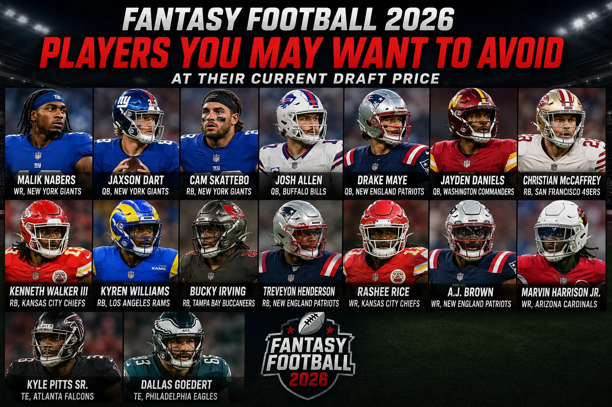
ESPN has released its latest fantasy football analysis identifying several players who could be overvalued in 2026 drafts. The list focuses on players whose current average draft position may not match their injury outlook, expected workload, consistency or overall risk.
Fantasy football isn't simply about selecting the most talented players. Draft position matters. A player can have an excellent season and still be a poor fantasy selection if you're forced to take him too early.
Here are some of the players highlighted in ESPN's analysis who fantasy managers may want to approach with caution.
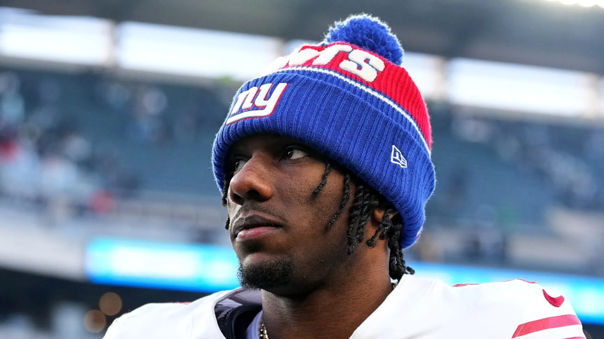
Malik Nabers — WR, New York Giants
Nabers has tremendous upside, but his health makes him difficult to trust as an early-round selection. After an outstanding rookie season, he appeared in only four games last year because of a serious knee injury. He also required an additional procedure during the offseason.
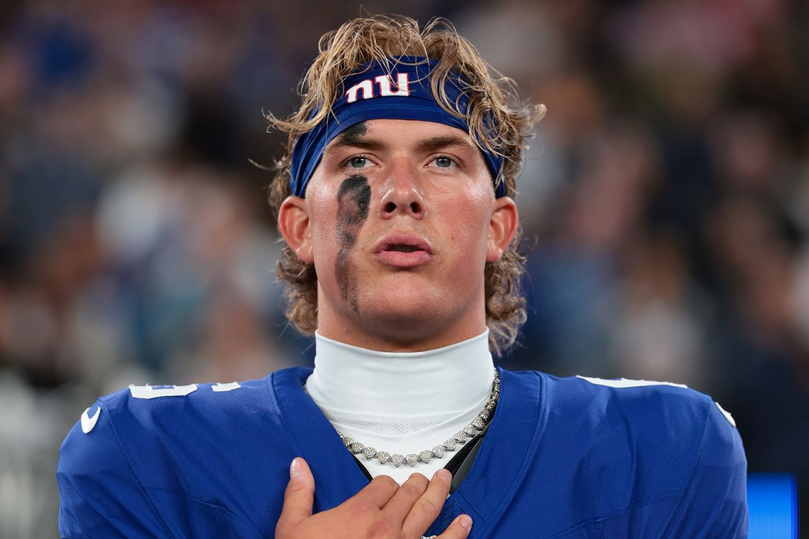
Jaxson Dart — QB, New York Giants
Dart showed exciting rushing ability during his rookie season but missed time with a concussion. His aggressive playing style creates both fantasy upside and injury concerns. Quarterback is also a deep fantasy position, giving managers safer alternatives later in drafts.
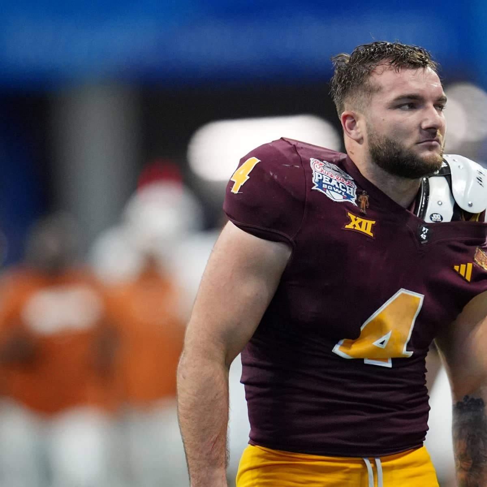
Cam Skattebo — RB, New York Giants
Skattebo quickly became a fantasy favorite after scoring seven touchdowns in eight games. His season ended after a dislocated ankle, however. His potential is significant, but his injury history makes his current draft price risky.
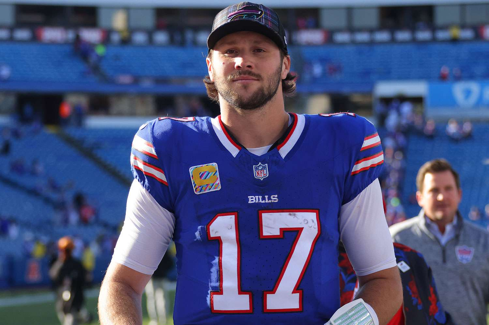
Josh Allen — QB, Buffalo Bills
Allen remains one of fantasy football's elite quarterbacks. The concern is his price. Selecting him in the second round could mean passing on valuable running backs and wide receivers while other productive quarterbacks remain available later.

Drake Maye — QB, New England Patriots
Maye produced impressive numbers last season, but repeating that level of fantasy production could be difficult. His 2026 schedule presents a tougher challenge, making his current draft price something managers should consider carefully.
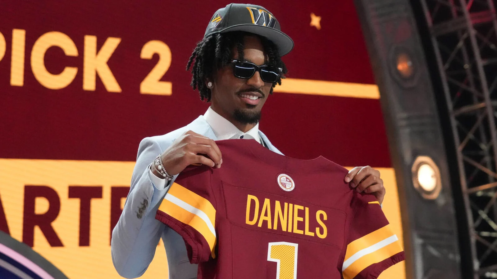
Jayden Daniels — QB, Washington Commanders
Daniels possesses tremendous rushing upside, but injuries limited him to seven games last season. His fantasy ceiling remains extremely high, but availability is a major concern.
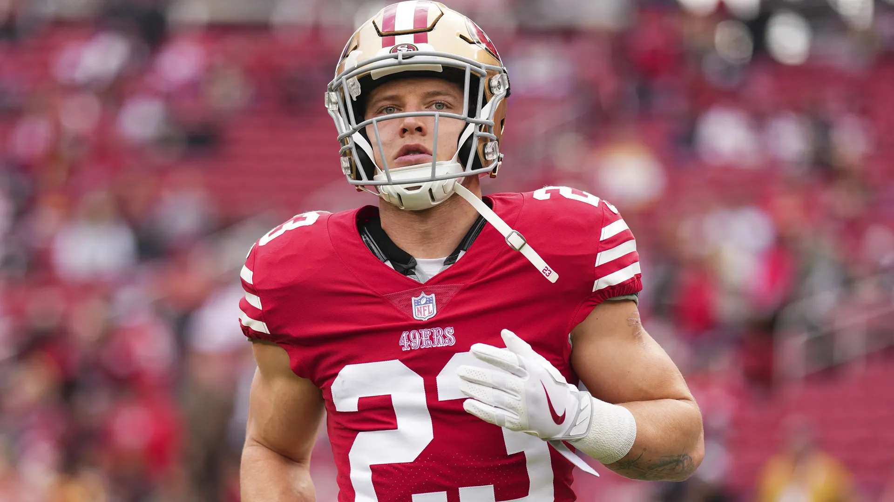
Christian McCaffrey — RB, San Francisco 49ers
McCaffrey returned to elite form last season while handling more than 900 snaps and 400 touches. Repeating that workload at age 30 could be difficult, making him a risky investment at an extremely high draft position.
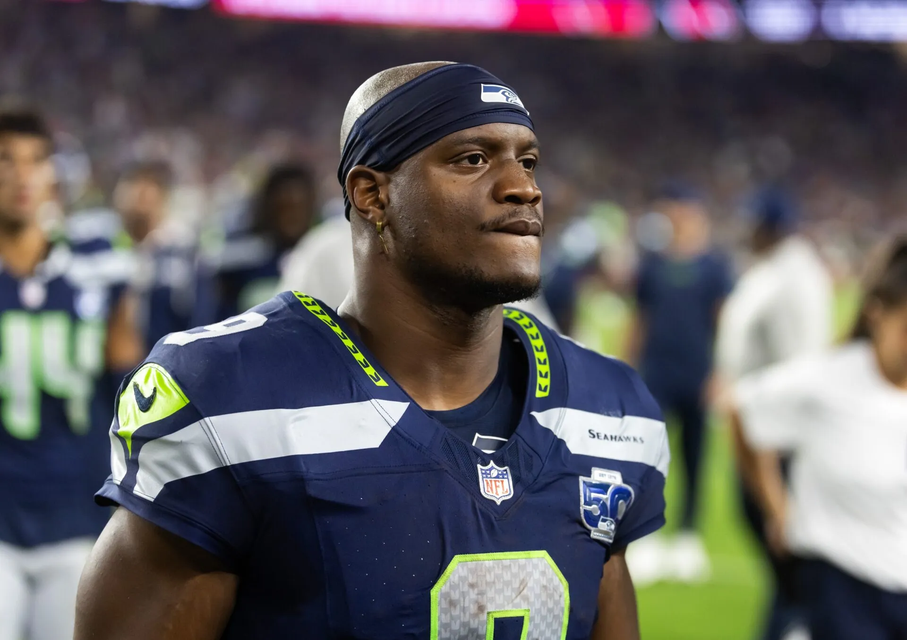
Kenneth Walker III — RB, Kansas City Chiefs
Walker enters Kansas City with plenty of excitement following his Super Bowl MVP performance. However, his previous fantasy production hasn't consistently matched his current draft price. His receiving workload will be important to watch.

Kyren Williams — RB, Los Angeles Rams
Williams has been extremely productive near the goal line, but Blake Corum's continued development could reduce his workload. A more balanced backfield could make Williams less reliable at his current draft position.
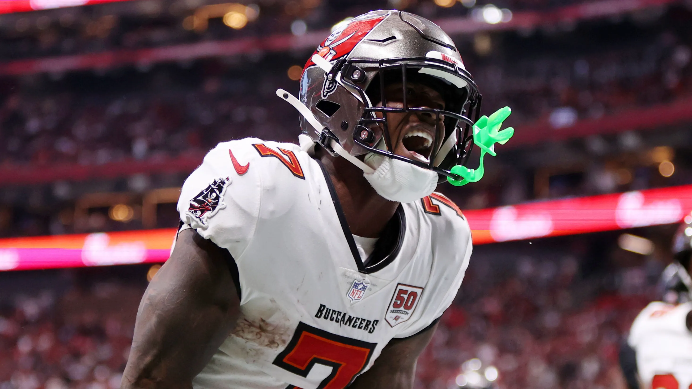
Bucky Irving — RB, Tampa Bay Buccaneers
Irving's production dipped during his second season, while Tampa Bay added Kenny Gainwell. Gainwell's receiving ability could lead to additional opportunities and make Irving's current draft position less attractive.
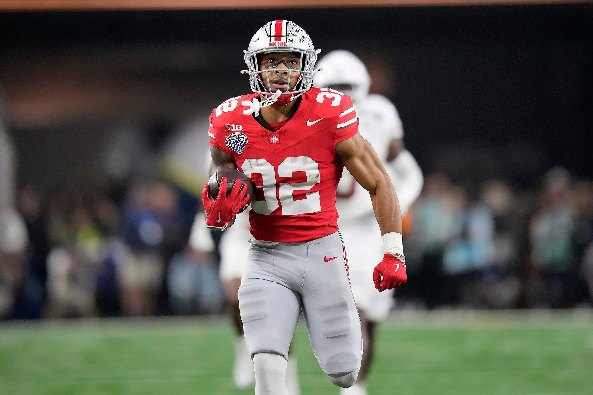
TreVeyon Henderson — RB, New England Patriots
Henderson has plenty of potential, but Rhamondre Stevenson remains involved in New England's offense. A shared workload could prevent Henderson from receiving enough touches to justify his current price.

Rashee Rice — WR, Kansas City Chiefs
Rice has demonstrated major fantasy potential when available, but availability remains the biggest concern. He has played only 12 games over the past two seasons because of injuries and suspension-related issues.

A.J. Brown — WR, New England Patriots
Brown remains a highly talented receiver, but questions surrounding his recent production and his transition to New England make him difficult to value as a top-10 fantasy wideout.
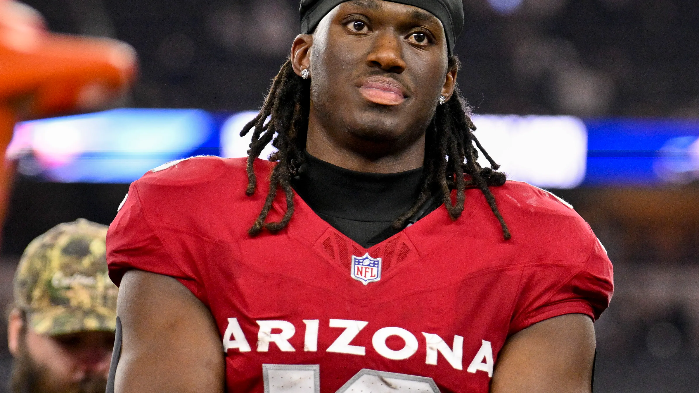
Marvin Harrison Jr. — WR, Arizona Cardinals
Harrison entered the NFL with enormous expectations after being selected fourth overall. His professional production has yet to consistently match that hype, making his current draft price worth questioning.
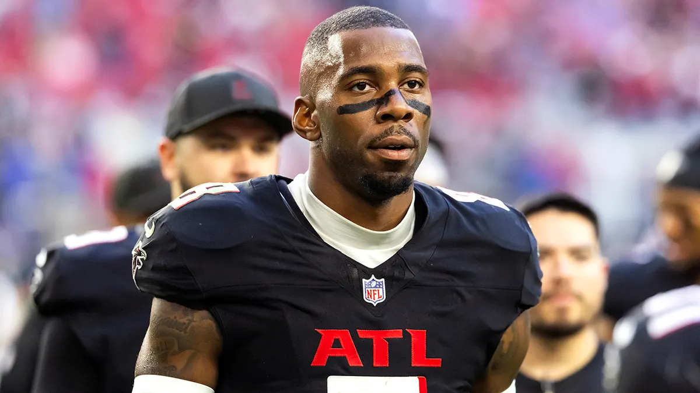
Kyle Pitts Sr. — TE, Atlanta Falcons
Pitts finally delivered a strong fantasy season, but a large portion of his production came from one massive game. His overall consistency and touchdown production remain concerns, particularly at a top-five tight end price.
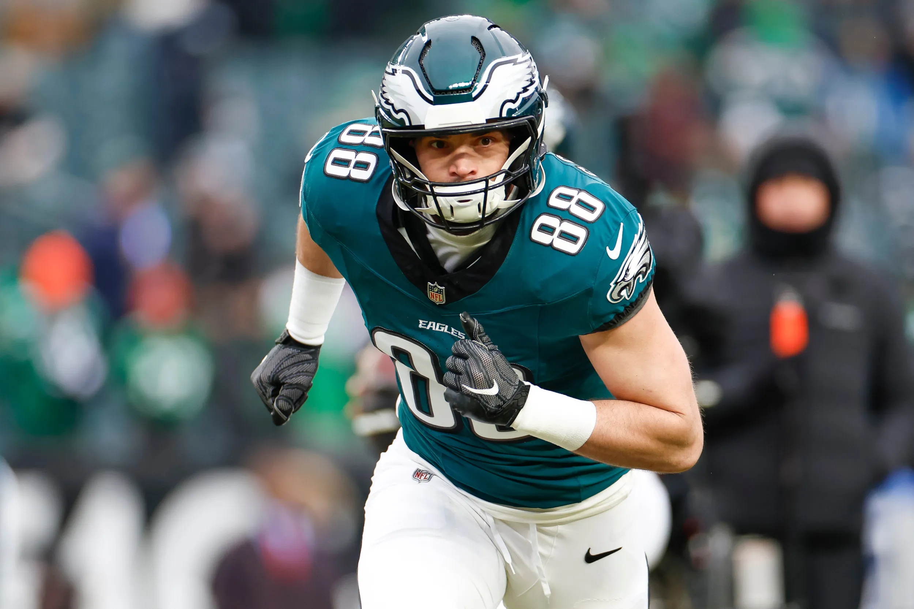
Dallas Goedert — TE, Philadelphia Eagles
Goedert's 11 touchdown receptions last season represented a major jump from his previous production. Combined with his injury history and age, expecting another double-digit touchdown campaign may be overly optimistic.
ESPN's analysis isn't suggesting that every player on this list will have a bad season. Instead, the focus is on draft value.
A player can still become a fantasy star while being a poor selection at his current average draft position. The key for managers is determining how much risk they're willing to accept and whether the potential reward justifies the draft capital required.
With the 2026 fantasy season approaching, knowing when to pass on a big name could be just as important as knowing who to draft.